Jet não é o seu goblin comum ele é um cientista maluco com um coração voltado para a cura e uma mente voltada para a destruição!
Seja aumentando os acertos críticos da sua equipe ou bloqueando as curas inimigas, Jet pode mudar o rumo de qualquer batalha
com sua mistura única de suporte e sabotagem.
Neste guia completo, exploraremos as melhores sinergias, estatísticas e estratégias de habilidades do Jet para ajudá-lo a decidir quando
e como liberar todo o seu potencial em Hero Wars: Dominion Era.
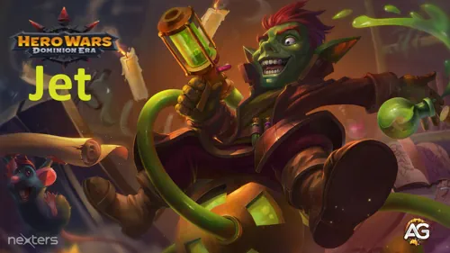
Guia do Jet - Hero Wars: Dominion Era, um jogo desenvolvido pela Nexters.
Quem é Jet?
Jet é um herói da retaguarda das classes Curador e Suporte, que depende da Inteligência como seu principal atributo. Conhecido como o exterminador de insetos de Tornville, ele usa seus experimentos científicos tanto para prejudicar os inimigos quanto para fortalecer os aliados.
Classe: Curador / Suporte
Posição: Retaguarda
Atributo Principal: Inteligência
Ele se destaca em aumentar a taxa de acertos críticos da sua equipe, tornando-se inestimável para times físicos que dependem de dano explosivo. Ao mesmo tempo, ele enfraquece as defesas inimigas e impede que elas se curem uma combinação poderosa para batalhas prolongadas.
Jet funciona melhor ao lado de heróis como Dante, K’arkh, Yasmine, Ishmael, Keira e Jhu, formando sinergias mortais que equilibram ofensa e sobrevivência. Vamos nos aprofundar em como dominar suas habilidades e montar a equipe perfeita para o Jet.
Prós e Contras de Jet – Hero Wars: Web & Facebook
✅ Prós
Forte suporte de retaguarda: cura e fortalece o aliado com maior Ataque Físico.
Aumenta a chance de acerto crítico de todos os aliados através de Fúria Desmedida.
Reduz a cura dos inimigos e diminui a Armadura do alvo com maior Armadura usando Tiro Ácido.
Excelente sinergia com Lutadores e Atiradores (Dante, K’arkh, Yasmine, Ishmael, Keira, Jhu).
Alto escalonamento de Inteligência aumenta o Ataque Mágico, fortalecendo tanto as curas quanto os debuffs.
❌ Contras
Vulnerável a dano explosivo por ser um suporte de retaguarda com vida moderada.
Depende fortemente do posicionamento e dos atributos dos aliados para maximizar a cura e os buffs.
O bônus passivo de acerto crítico (Fúria Desmedida) afeta apenas aliados de dano físico; magos não se beneficiam totalmente.
Suas habilidades podem ser interrompidas, reduzindo a eficácia em combates PvP intensos ou contra dano explosivo.
Prioridade de Melhoria das Habilidades do Jet - Hero Wars: Dominion Era
Saiba quais habilidades do Jet devem ser aprimoradas primeiro em Hero Wars: Dominion Era! Entenda como cada habilidade funciona e por que algumas melhorias são mais importantes que outras.
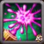
Elixir do Vigor
Jet canaliza um elixir vitalizante para o aliado com o maior Ataque Físico.
Enquanto o efeito estiver ativo, esse aliado ganha aumento de Ataque Físico, 30% de velocidade de ataque adicional
e regenera Vida a cada segundo até que a energia de Jet acabe ou ele seja interrompido.
Fórmula: (20% do Ataque Mágico + Nv * 50) de aumento no Ataque Físico.
Regeneração de Vida por segundo: (25% do Ataque Mágico + Nv * 50).
Prioridade de Evolução:Muito Alta – Esta é a habilidade característica do Jet e sua principal fonte de suporte para a equipe.
Ela pode aumentar drasticamente o desempenho do seu causador de dano principal, especialmente em times físicos como Dante, Yasmine ou K’arkh.
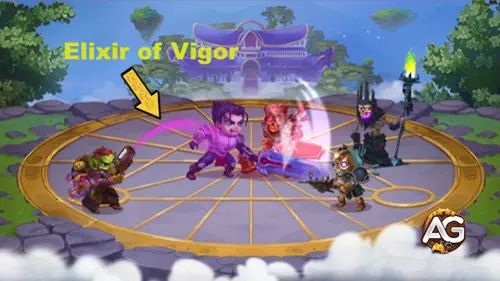
Habilidade Elixir do Vigor - Jet, Hero Wars Dominion Era.
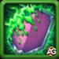
Tiro Ácido
Jet dispara ácido contra o inimigo com a maior Armadura, reduzindo-a por 8 segundos.
Isso ajuda seus causadores de dano a atingirem mais forte, especialmente contra tanques resistentes.
Fórmula: (10% do Ataque Mágico + Nv * 25) de redução de Armadura.
Prioridade de Evolução:Média-Alta – O efeito é poderoso em times físicos,
mas tem menos impacto se seus heróis principais causarem dano mágico ou puro. Aprimore após as habilidades principal e passiva.
Jet lança um frasco envenenado que impede os inimigos próximos de regenerarem Vida por 8 segundos.
Embora útil, esse efeito tem valor limitado em batalhas de fim de jogo, onde a maioria dos oponentes depende de escudos ou dano explosivo em vez de cura.
Prioridade de Evolução:Média – O bloqueio de cura pode ajudar contra heróis específicos como Maya ou Celeste,
mas é situacional. Melhore por último, já que o impacto é menor em níveis altos, onde a cura é menos dominante.
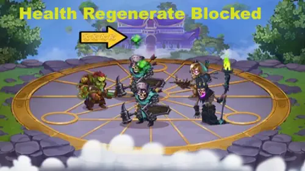
Habilidade Poção da Fadiga - Jet, Hero Wars Dominion Era.
Fúria Desmedida
Enquanto Jet estiver vivo, todos os aliados ganham uma chance aumentada de causar golpes críticos.
Esse efeito passivo torna toda a equipe mais perigosa, especialmente heróis que dependem de dano crítico.
Fórmula: (2,5% do Ataque Mágico + Nv * 15 + 100) de bônus na Chance de Acerto Crítico.
Prioridade de Evolução:Alta – Esta passiva atua constantemente, fortalecendo todos os aliados sem precisar de ativação.
É particularmente eficaz em equipes com causadores de dano crítico, multiplicando a utilidade do Jet durante toda a batalha.
Quando a seta da Fúria Desmedida aparece acima da cabeça dos seus aliados durante a batalha, significa que eles estão recebendo
um bônus de chance de acerto crítico. No entanto, esse bônus funciona apenas para heróis de ataque físico.
Heróis baseados em magia não se beneficiam desse efeito a menos que tenham ataques básicos físicos.
Nesse caso, eles podem causar golpes críticos com seus ataques básicos, mas não com suas habilidades.
Melhor Visual (Skin) para Jet – Hero Wars: Dominion Era
Descubra quais skins do Jet valem mais a pena aprimorar primeiro em Hero Wars: Dominion Era! Saiba como cada uma melhora suas habilidades e aumenta o desempenho da equipe.
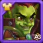
Visual Padrão
Bônus de atributos: Inteligência +1.365
Ataque Mágico proveniente da Inteligência: +4.095
Defesa Mágica proveniente da Inteligência: +1.365
Ataque Físico proveniente da Inteligência: +1.365
Prioridade de Evolução:Alta – Esta skin aumenta o Ataque Mágico do Jet e a eficácia geral de suas habilidades, melhorando diretamente seu poder de cura e fortalecimento. Um ótimo aprimoramento inicial tanto para builds ofensivas quanto de suporte.
Total de Pedras de Visual de Inteligência para nível máximo:
30.825
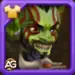
Visual Bárbaro
Bônus de atributos: Ataque Mágico +10.650
Prioridade de Evolução:Muito Alta – A melhor skin do Jet em termos de desempenho geral. Maximiza o poder de cura e fortalece todas as habilidades que escalam com Ataque Mágico, como Chance de Dano Crítico sendo a melhor opção para aprimorar suas principais funções de suporte.
Total de Pedras de Visual de Inteligência para nível máximo:
55.410
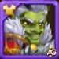
Visual Lunar
Bônus de atributos: Vida +106.645
Prioridade de Evolução:Média-Alta – Oferece mais sobrevivência, permitindo que Jet permaneça vivo por mais tempo para continuar fortalecendo e curando seus aliados. Excelente para formações defensivas e batalhas prolongadas, mas menos impactante ofensivamente.
Total de Pedras de Visual de Inteligência para nível máximo:
55.410
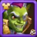
Visual Romântico
Bônus de atributos: Armadura +10.650
Prioridade de Evolução:Média – Adiciona proteção contra ataques físicos, ajudando Jet a sobreviver a danos explosivos. É uma opção defensiva útil em PvP, mas não essencial para seu papel de suporte na retaguarda.
Total de Pedras de Visual de Inteligência para nível máximo:
55.410
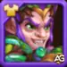
Visual Primaveril
Bônus de atributos: Ataque Mágico +10.650
Prioridade de Evolução:Alta – Também aumenta o Ataque Mágico, fortalecendo as habilidades de cura e suporte do Jet. Tem prioridade um pouco menor que a Visual Bárbara, pois oferece um benefício similar, mas com menor eficiência nos estágios iniciais.
Total de Pedras de Visual de Inteligência para nível máximo:
55.410
Prioridade de Evolução dos Glifos do Jet
Aprimore os glifos do Jet de forma inteligente, este guia segue a ordem do jogo e classifica cada glifo pelo impacto real em batalha, para que você saiba qual evoluir primeiro.
1º Glifo - Ataque Mágico
Este glifo aumenta o Ataque Mágico do Jet, o que eleva diretamente a chance de dano crítico dos aliados, o poder de suas curas, fortalecimentos e enfraquecimentos o atributo mais importante para Jet.
Bônus de atributos: +6.500 de Ataque Mágico
Prioridade de Evolução:Muito Alta – Maximize este glifo primeiro. Como a maioria das habilidades do Jet escalam com Ataque Mágico, aumentar esse atributo oferece a melhora mais consistente e significativa para sua cura do Elixir, o bônus de Fúria Desmedida, o poder do Tiro Ácido e o impacto geral na equipe.
2º Glifo - Vida
Este glifo aumenta o total de Vida do Jet, melhorando sua sobrevivência para que ele continue lançando habilidades e sustentando aliados em lutas prolongadas.
Bônus de atributos: +62.200 de Vida
Prioridade de Evolução:Média-Alta – Aprimore após o Ataque Mágico (ou junto, se enfrentar muito dano explosivo). Vida extra ajuda o Jet a sobreviver mais tempo, mantendo seus buffs e curas, algo crucial em batalhas longas ou de alto dano.
3º Glifo - Defesa Mágica
Este glifo aumenta a Defesa Mágica do Jet, reduzindo o dano mágico recebido de magos e conjuradores com ataques em área.
Bônus de atributos: +6.500 de Defesa Mágica
Prioridade de Evolução:Média – Útil quando você enfrenta inimigos baseados em dano mágico. É uma melhoria defensiva situacional; priorize-a depois de garantir Ataque Mágico e uma boa base de Vida.
4º Glifo - Esquiva
Este glifo adiciona Esquiva, dando ao Jet uma chance de evitar ataques físicos. A Esquiva é menos confiável, pois depende de probabilidade e situação.
Bônus de atributos: +1.995 de Esquiva
Prioridade de Evolução:Baixa – Aprimore por último. A Esquiva pode ajudar ocasionalmente, mas é inconsistente e oferece menos valor previsível do que Ataque Mágico, Inteligência ou Vida em grande quantidade.
5º Glifo - Inteligência
Este glifo aumenta a Inteligência do Jet (seu atributo principal), que se converte em múltiplos benefícios: Ataque Mágico, Defesa Mágica e um pequeno aumento de Ataque Físico.
Bônus de atributos: Inteligência +1.135
- Ataque Mágico proveniente da Inteligência: +3.405
- Defesa Mágica proveniente da Inteligência: +1.135
- Ataque Físico proveniente da Inteligência: +1.135
Prioridade de Evolução:Alta – Embora apareça por último na interface do jogo, a Inteligência é uma melhoria importante do início ao meio do progresso, pois oferece um aumento equilibrado no Ataque Mágico (principal escalonamento do Jet) e também em defesa. Considere-a o segundo glifo mais importante após o de Ataque Mágico.
Prioridade de Evolução dos Artefatos do Jet – Hero Wars: Dominion Era
Os artefatos do Jet determinam o quão bem ele apoia seus aliados. Seu Ataque Mágico aumenta diretamente a chance crítica da equipe e o poder de cura, tornando a priorização dos artefatos essencial.
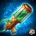
Artefato de Arma: Canhão do Jet
Bônus de atributos: Armadura +50.190
Prioridade de Evolução:Alta – Este artefato é ativado com a habilidade suprema do Jet, concedendo um forte bônus de Armadura para toda a equipe por 9 segundos. É uma ótima melhoria defensiva, especialmente contra atacantes físicos, mas como não aumenta suas curas ou buffs críticos, fica em segundo lugar após o Anel em impacto geral.
Artefato de Livro: Livro das Ilusões
Bônus de atributos: Vida +83.649 / Esquiva +4.647
Prioridade de Evolução:Média – Oferece bônus extras de Vida e Esquiva, tornando o Jet mais difícil de eliminar, permitindo que ele continue aplicando buffs e curas. No entanto, não melhora diretamente seus efeitos ativos ou passivos, então deve ser o último a ser evoluído.
Artefato de Anel: Anel de Inteligência
Bônus de atributos: Inteligência +6.249
- Ataque Mágico proveniente da Inteligência: +18.747
- Defesa Mágica proveniente da Inteligência: +6.249
- Ataque Físico proveniente da Inteligência: +6.249
Prioridade de Evolução:Muito Alta – O Ataque Mágico do Jet afeta diretamente sua cura, a redução de Armadura dos inimigos e, principalmente, sua habilidade Fúria Desmedida, que concede aos aliados uma maior chance de acerto crítico. Quanto mais forte for o anel, mais acertos críticos sua equipe causará. Isso faz do Anel o artefato de maior prioridade para maximizar o potencial de suporte do Jet.
Melhor Patronagem para Jet
Descubra os melhores mascotes para o Jet em Hero Wars: Dominion Era. Escolha mascotes que maximizem sua cura, buffs e a sobrevivência da equipe com bônus de patronagem eficazes.
Axel é a melhor escolha para o Jet porque sua patronagem aumenta o Ataque Mágico e a Armadura. Sua habilidade, Bolha Defensiva, impede que o dono receba dano acima de uma certa porcentagem de sua vida máxima, permitindo que o Jet sobreviva por mais tempo para curar e fortalecer seus aliados de forma eficaz. Isso é especialmente poderoso em lutas longas ou contra inimigos com alto dano explosivo.
Oliver fornece bônus adicionais de Vida e Armadura através da patronagem. Sua habilidade cura automaticamente o dono quando sua vida cai abaixo de 50%, oferecendo uma boa sustentação para o Jet. Embora eficaz, não amplifica suas habilidades de cura ou buffs, sendo um pouco menos impactante que Axel para maximizar a utilidade da equipe.
Cain concede bônus de Esquiva e Ataque Físico através da patronagem. Sua habilidade concede energia a cada esquiva bem-sucedida, o que pode ajudar o Jet a usar suas habilidades um pouco mais rápido. No entanto, como o foco principal do Jet é o Ataque Mágico e a cura, os benefícios de Cain são menos diretos, tornando-o a menor prioridade de patronagem.
Como Contra-Atacar Jet – Hero Wars: Dominion Era
Saiba quais heróis são eficazes contra o Jet em Hero Wars: Dominion Era. Esses contra-ataques exploram suas fraquezas, especialmente sua dependência de Inteligência e buffs de suporte.
Por que Amira é um counter do Jet: Amira explora a alta Inteligência do Jet e os buffs de acerto crítico que ele concede aos aliados. Sua habilidade Arte do Engano aumenta a cura em inimigos baseados em Inteligência, mas ao mesmo tempo reduz seu Ataque Mágico e causa dano, enfraquecendo diretamente o Jet. Sua habilidade Fúria Desesperada faz com que os aliados ágeis do Jet errem ataques críticos, neutralizando o bônus da Fúria Desmedida.
Cornelius
Por que Cornelius é um counter do Jet: Cornelius mira o inimigo com maior Inteligência usando Sabedoria Pesada, causando dano massivo proporcional à Inteligência. Isso pune diretamente o alto escalonamento de atributos do Jet, reduzindo sua sobrevivência e eficácia em batalhas prolongadas.
Helios
Por que Helios é um counter do Jet: A Retribuição Flamejante do Helios pune ataques críticos de inimigos enquanto Vento Solar está ativo. Como o Jet aumenta a chance de acerto crítico de seus aliados, Helios devolve essa agressão contra o Jet e sua equipe, anulando parte do impacto de sua habilidade passiva e suporte ofensivo.
Por que Kayla é um counter do Jet: A habilidade Possuída pelo Fogo da Kayla permite que ela salte para trás das linhas inimigas, diretamente até o Jet, incendiando-se e causando dano contínuo enquanto renova os Glifos de Fênix. Como o Jet é um suporte de retaguarda e vulnerável a heróis que ignoram a linha de frente, a mobilidade e o dano persistente da Kayla são extremamente eficazes contra ele.
Melhores Bandeiras de Guerra para Jet – Hero Wars
Descubra as melhores Bandeiras de Guerra para Jet em Hero Wars: Dominion Era, maximizando sua cura, buffs e suporte de energia para os aliados da retaguarda.
Bandeira de Guerra da Recuperação:
.
Benefício para Jet e equipe: Aumenta toda a cura em 10%, aprimorando diretamente o principal papel de Jet como curandeiro. Isso aumenta a eficácia do seu Elixir do Vigor e mantém os aliados principais vivos por mais tempo, tornando-a a melhor escolha para batalhas focadas em suporte.
Bandeira de Guerra da Decadência:
.
Benefício para Jet e equipe: Reduz a cura dos inimigos em 10%, criando uma sinergia perfeita com as habilidades de cura e debuff de Jet. Ao diminuir a recuperação inimiga, a equipe de Jet mantém a vantagem em lutas prolongadas, aumentando o valor geral de suas habilidades de suporte.
Bandeira de Guerra da Prontidão:
.
Benefício para Jet e equipe: Concede 100 de energia ao herói mais recuado no início da batalha e a cada 20 segundos, oferecendo suporte perfeito a Jet na retaguarda. Isso permite que ele use o Elixir do Vigor e outras habilidades mais rapidamente, melhorando de forma consistente sua cura e os buffs da equipe ao longo da luta.
Melhores Times de Jet - Hero Wars: Dominion Era
Melhores Times de Jet - Setup 1
#1
Main Pet
Jet se destaca em equipes de suporte de retaguarda, especialmente quando emparelhado com heróis como Dante e Aurora. Aurora ajuda a cobrir a vulnerabilidade de Dante à magia, criando uma sinergia equilibrada que mantém a equipe resiliente.
Conclusão
Jet é um suporte de retaguarda versátil e poderoso, excelente em curar, fortalecer aliados físicos e enfraquecer as defesas inimigas. Suas habilidades, quando combinadas com os heróis, mascotes e artefatos certos, podem mudar o rumo da batalha ao maximizar a sobrevivência da equipe e o potencial de dano crítico.
Dominar Jet significa entender suas sinergias, usar suas habilidades no momento certo e escolher os melhores companheiros e bandeiras de guerra para amplificar seu impacto. Com a configuração adequada, Jet continua sendo um herói de suporte essencial tanto em cenários PvE quanto PvP.
Sobre o autor
Alexandre Domingos é pós-graduado em Engenharia e atua como Supervisor de Produção. Nas horas vagas, se aventura como youtuber e blogueiro no Alexandre Games, unindo sua paixão por tecnologia e estratégia com o mundo dos games. Desde os 5 anos mergulha nesse universo, jogando em plataformas clássicas como MSX, Master System, Nintendo e até em um velho PC 286. Desde 2019, Alexandre também joga Hero Wars e Mobile Legends, entre outros jogos mobile, criando guias, tutoriais e análises para a comunidade.
Você gostou do nosso Guia do Jet para Hero Wars Web e Facebook? Há algo que não entendeu ou gostaria de sugerir mudanças? Convidamos você a se juntar à nossa sessão de comentários na página do Alexandre Games Blog. Não hesite em expressar sua opinião, clarificar suas dúvidas e compartilhar sua sugestões. Clique no botão abaixo para começar:
 30.825
30.825